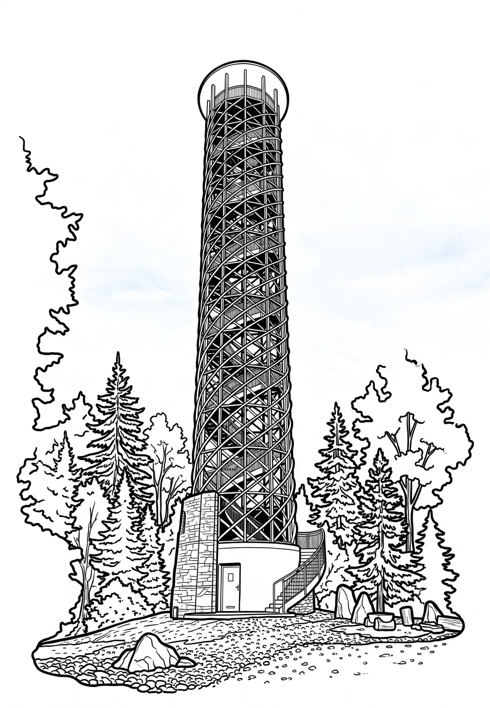

Rozhledna Velký Lopeník
Velký Lopeník (slovensky Veľký Lopeník) je vrchol vysoký 911 m nacházející se v Bílých Karpatech na hranicích České republiky a Slovenska na pomezí okresu Uherské Hradiště a okresu Nové Mesto nad Váhom (Trenčínský kraj). Kopec se vypíná 3 km jihovýchodně od obce Březová ležící na jihovýchodní Moravě, asi 13 km od Uherského Brodu. Je nejvyšším vrcholem Lopenické hornatiny.
Více na Wikipedii